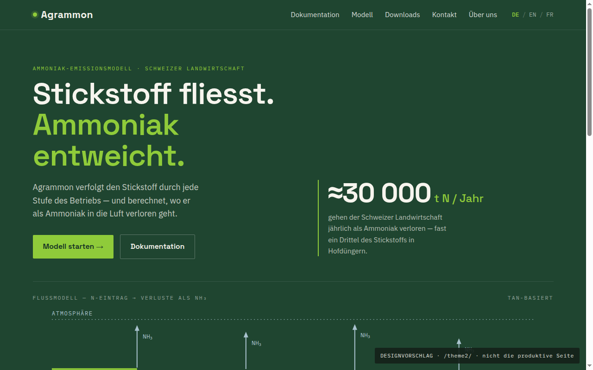
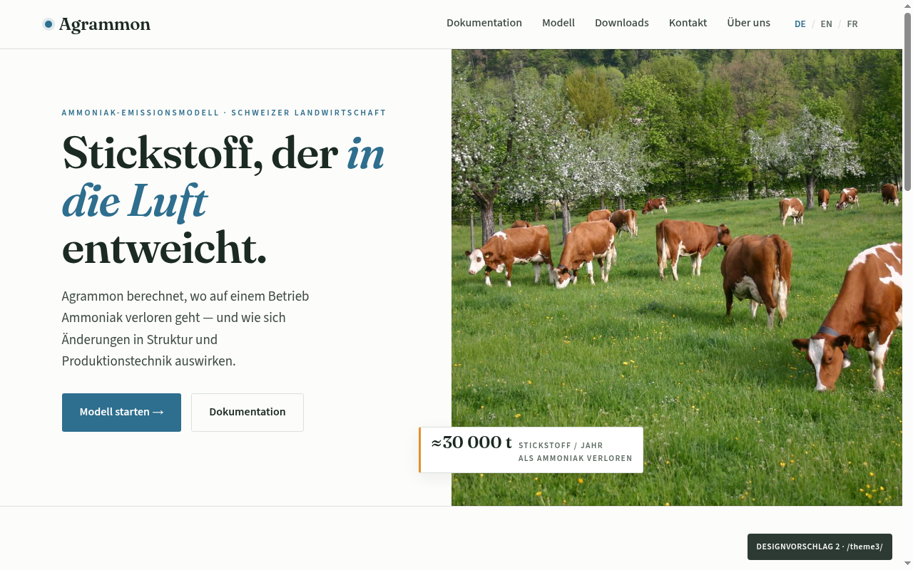

Beide Varianten zeigen denselben Inhalt — der Vergleich ist rein gestalterisch. Wählen Sie eine Variante, um sie durchzuklicken.

Dunkel, präzise, diagrammatisch. Grotesk-Typografie und das Stickstoff-Flussmodell als Leitbild — stellt den Mechanismus in den Vordergrund.
Variante 1 ansehen →
Hell, fotografisch, redaktionell. Serifen-Typografie, Himmelblau und echte Landschaftsbilder — stellt die Auswirkungen in den Vordergrund.
Variante 2 ansehen →